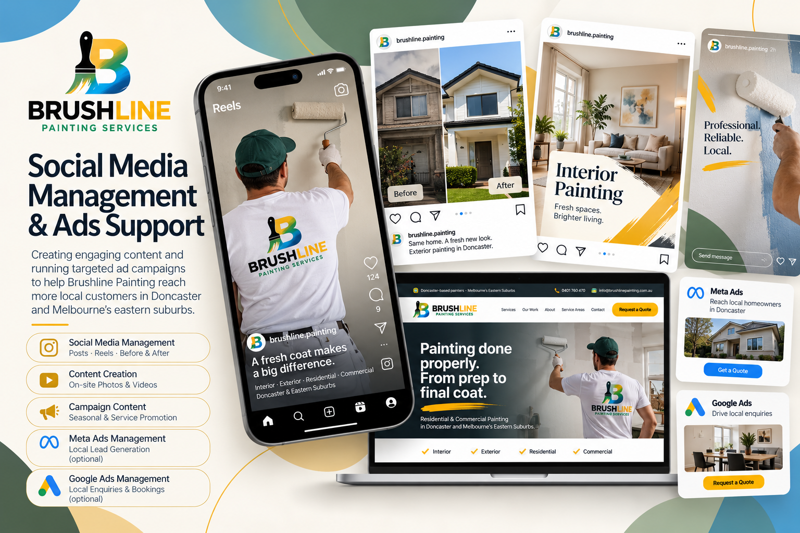

TRADES & LOCAL SERVICES
Brushline Painting
A new digital foundation for a local painting business, bringing the website, local search presence and brand touchpoints together in one clear system.

THE CHALLENGE
Building a professional digital presence from the ground up
Brushline needed a credible online presence that could support local enquiries and give potential customers a clear place to understand the business, services and previous work.
THE APPROACH
A practical foundation designed for a local service business
The project brought together a responsive website, service-focused content, project gallery, Google Business Profile setup and local SEO foundations. The website was built to stay simple to maintain while supporting future Google Ads and ongoing gallery updates.
- Responsive website design and development
- Service and local SEO structure
- Google Business Profile setup
- Project gallery and enquiry flow
- Digital foundations for future advertising
THE DIRECTION
A connected foundation for future growth
Brushline now has a consistent digital base that connects its website, local search presence and enquiry journey, with room to expand content and advertising as the business grows.
Need a clearer digital presence for your business?
Let’s look at what your business actually needs and build from there.
Start a Conversation